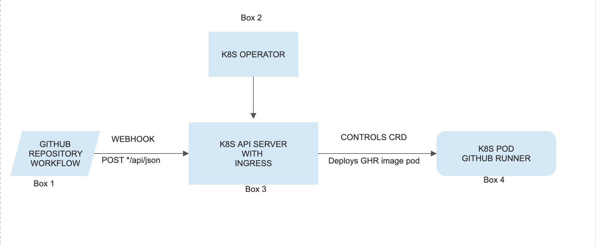
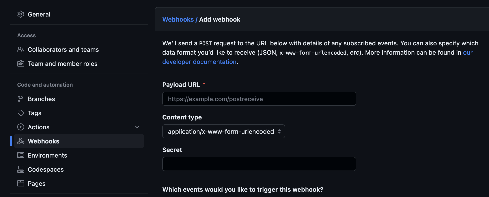

Whoo hoo! Thanks for visiting again. 🎉
Lets design an on-demand github hosted runner this time. You know.. nowadays CI/CD are shifting to GHA from jenkins. Yeah I know GHA is still not matured enough to tackle jenkins. But it has a speacial advantage over jenkins. AUTOMATION. Automation becomes smoother with GHA. The topic..
Self Hosted Runners.
In my organisation we still don’t have an on-demand github self hosted runner. I think most of the companies are running self hosted runners in k8s to avoid expense and to get high performance. I love it. Question is are we saving resources too? Definitely not hard to say. Nope. 😶. Does resource matter in k8s 🤣 ? Yes.
Here is a basic design for GH runners to run ON-DEMAND.

🧣THE FLOW🧣
Box 1: Setup the github repository webhook (see MISC section if you never configured one)
Box 2: We need a k8s operator which can control the api-server we created.
Box 3: Api-server should be capable of receiving payload and create a k8s job to spin up a github runner pod and once done shut it down.
Box 4: Running k8s pod github runner.
📌 MISC📌
🎃 How to setup webhook?
Configure the repository to send json payload when a workflow event is triggered.

-
Provide the k8s application URL we configured in
Payload URL -
Content-typeapplication/json -
Which events would you like to trigger this webhook?section selectLet me select individual events–>workflow jobs and runsand save.
🎃 An example code snippet of api server (need to add more functionalities)
# Code
package main
import (
"log"
"net/http"
"io/ioutil"
"github.com/tidwall/gjson"
)
func test(rw http.ResponseWriter, req *http.Request) {
body, err := ioutil.ReadAll(req.Body)
if err != nil {
panic(err)
}
log.Println(string(body))
value := gjson.Get(string(body), "repository.full_name")
log.Println(value.String())
}
func main() {
http.HandleFunc("/test", test)
log.Fatal(http.ListenAndServe(":8082", nil))
}
🎃 Build a container image, go build can help you on this or use below ones
# DockerFile
FROM --platform=$BUILDPLATFORM golang:1.20-alpine AS build-env
COPY . /app
WORKDIR /app
ARG TARGETOS
ARG TARGETARCH
RUN CGO_ENABLED=0 GOOS=${TARGETOS} GOARCH=${TARGETARCH} \
go build -ldflags="-s -w" -o myapp main.go
# Create image
FROM scratch
COPY --from=build-env /app /
ENTRYPOINT ["/myapp"]
then build it docker build --build-arg GITHUB_TOKEN=<token> --build-arg RUNNER_VERSION=<runner version without v suffix> --build-arg RUNNER_GROUP=<runner group name> -t <image name> .
🎃 If you want to deploy in k8s
apiVersion: apps/v1
kind: Deployment
metadata:
name: webhook-receiver
spec:
selector:
matchLabels:
app: webhook
replicas: 1
template:
metadata:
labels:
app: webhook
spec:
containers:
- name: webhook-receiver
image: <Image repository, name and tag>
ports:
- containerPort: 8082
---
apiVersion: v1
kind: Service
metadata:
name: webhook-receiver-service
spec:
selector:
app: webhook
ports:
- protocol: TCP
port: 8082
targetPort: 8082
---
apiVersion: networking.k8s.io/v1
kind: Ingress
metadata:
annotations:
nginx.ingress.kubernetes.io/cors-allow-credentials: "false"
nginx.ingress.kubernetes.io/cors-allow-methods: GET
nginx.ingress.kubernetes.io/enable-cors: "true"
nginx.ingress.kubernetes.io/force-ssl-redirect: "true"
nginx.ingress.kubernetes.io/ssl-redirect: "true"
name: webhook-receiver-ingress
namespace: dynamic-runner
spec:
ingressClassName: jinos-class
rules:
- host: dynamic-runner.shared-np.rr-it.com
http:
paths:
- backend:
service:
name: webhook-receiver-service
port:
number: 8082
path: /
pathType: Prefix